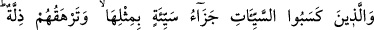

KÖTÜ İŞLER YAPANLAR
27. Kötü işler yapanlara da kötülüğün cezâsı misliyle verilir ve kendilerini bir
horluk kaplar. Onları Allah’tan kurtaracak hiç kimse yoktur. Sanki yüzleri karanlık
gecelerden parçalara bürünmüştür. İşte onlar da cehennemliklerdir. Hep orada
kalacaklardır.
“Kötü işler yapanlara da” şirk günahını ve başka mâsıyetleri irtikâb edenlere de
“kötülüğün cezâsı misliyle verilir.” Kötü işler yapanların cezâsı da bir günaha karşılık
bir kötülük olmak üzere cezâlandırılmaktır. İyiliğin karşılığı artırıldığı gibi kötülüğünki
artırılmaz.
el-Keşşâf’ta denilir ki: “Bu âyette önceki âyetteki “fazlası” ile kasdedilenin Allah’ın
fazl u keremi olduğuna delil vardır. Çünkü Allah’ın kötülüğü daha fazlasıyla
cezâlandırmaması O’nun âdil olduğuna delildir. Önceki âyette ise iyiliğin karşılığını
fazlasıyla vermesi, fazl u keremini gösterir.”
Fakir (Bursevî) der ki: Bütün müfessirler, bu konuda el-Keşşâf müellifi
Zemahşerî’ye tâbi olmaktadırlar. Fakat Hz. Peygamber (s.a.)’in âyetle ilgili yukarıda
geçen yorumu, tâbi olunmaya, tercih edilmeye ve her görüşe takdim edilmeye daha
lâyıktır. Buradaki fazlalıktan, Allah’ın fazlının ve O’na kavuşmanın kastedilmesini
engelleyen bir şey de yoktur. Çünkü, değerli şeylerin en üstünü olan kavuşma hâsıl
olduktan sonra, ondan daha aşağı seviyedeki fazl ve sevabı katlama ihsânının hâsıl
olacağı daha açıktır.
“Ve” ateşi gözleriyle gördükleri zaman “kendilerini bir horluk” hakirlik, rüsvaylık
“kaplar.” örter. Yâni zillet ve hakirliğin eserleri onların üzerinde zâhir ve âşikâr olur.
Burada kaplama fiilinin yüzlerine değil de kendilerine isnâd edilmesi bu horluğun
kendilerini tamamen kuşattığını, her taraflarını kapladığını bildirmek içindir.
“Onları Allah’tan” yani Allah’ın gazabından ve azâbından “kurtaracak”
engelleyecek, koruyacak “hiç kimse yoktur. Sanki yüzleri” kapkara olduğu için
“karanlık gecelerden parçalara bürünmüştür.” Yâni karanlık halindeki geceden olan
parçalara bürünmüştür. Bulanık gece gibi gamdan ve kederden onların yüzleri siyah
olmuştur.
“İşte onlar” kötü işler yapan o güruh, yâni müşrikler ve münâfıklar “da
cehennemliklerdir. Hep orada kalacaklardır.”
Bilesin ki cennete girmek Allah’ın rahmetiyle, derecelerin bölüştürülmesi amellere